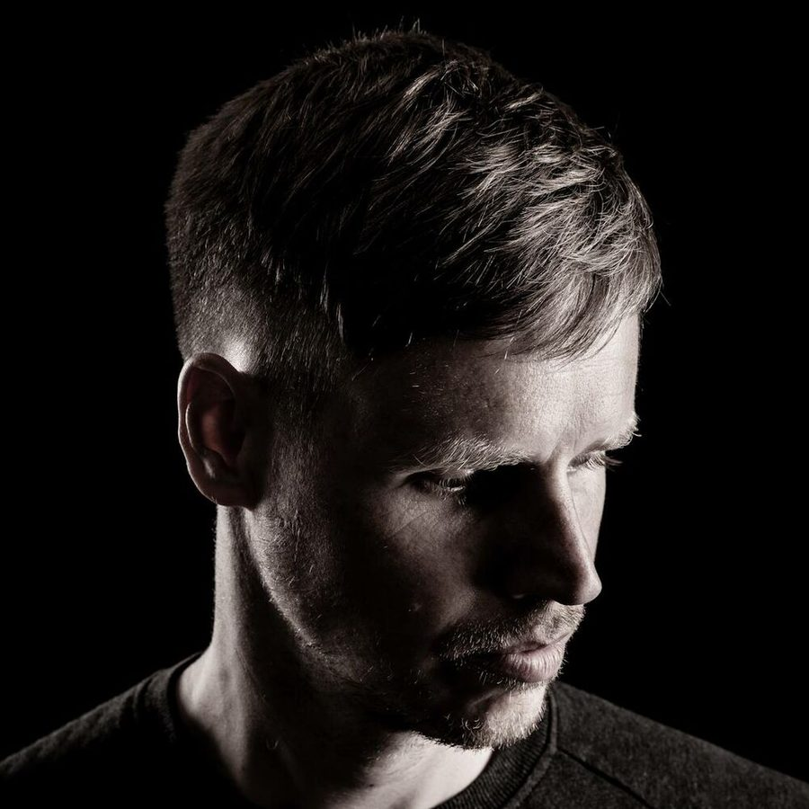

Joris Voorn talks up his 'Balance' triumph


“I really did try and do something special, both for myself and for the listening audience.” When rising Dutch techno and progressive star Joris Voorn was revealed to be behind the first installment into to esteemed Balance series for 2009, whispers quickly built that we’d be treated to something very special indeed, a double-CD opus made up of more than 100 different musical parts that took months to compile in the studio. By the end of the year, Joris Voorn had taken the crown as one of underground electronic music’s most successful breakthrough artists, and Balance 014 had taken the very top accolade in ITM’s Top Releases of 2009.
“I’m really happy that people got the message, and really did appreciate all the effort I put into it,” Joris told ITM, as he prepares to return to Australia for the commencement of the inaugural Creamfields tour next weekend. He says he’s also happy for the opportunity given to him by Australian label EQ Recordings. “It gives the artist the chance to do something out of the ordinary, and if you take that chance then you can really do something with it…I tried to show I I’m interested in the whole spectrum of music, and not just the peaktime house tracks.”
Joris says he was excited to to discover the release took the prize in ITM’s Top Releases of 2009, and he’s got a few complimentary things to say about the ITM community. “It’s nice, because I think inthemix is a very interesting forum. I know it’s basically 100 per cent Australia based, but I think it’s very alive and present forum. Everybody seems to be on there, and everybody involved in the discussions seems to know what they are talking about.”
He says his exposure to the community has even raised the bar for future visits. “I try to read a little bit about the parties where I’m playing, before and after, and to see what the expectations are. So it’s an honour to hear how much people have been into the Balance mix.”
Stay tuned for ITM’s full interview with Joris Voorn, and check out our Creamfields Festival Page for more info.